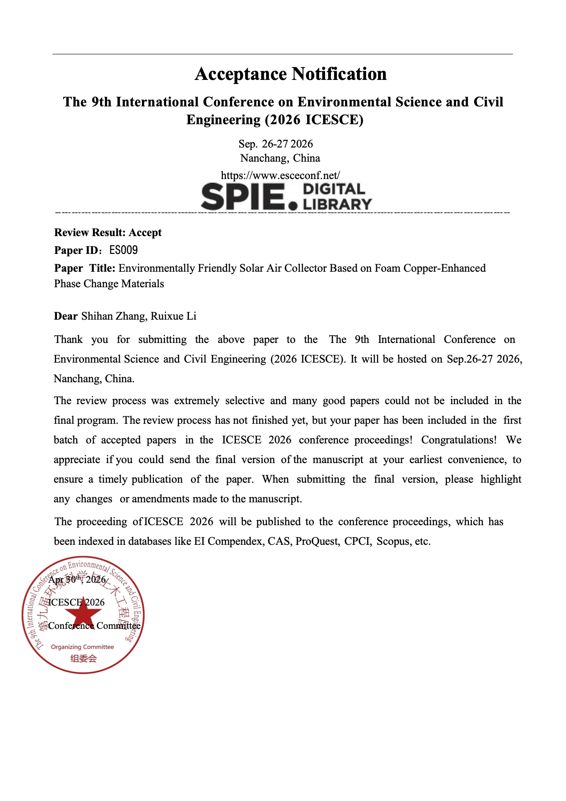

Abstract
Self-powered monitoring systems capable of scavenging ambient mechanical energy are a highly desirable solution to eliminate the reliance on batteries and grid power in remote and distributed atmospheric sensing networks. However, the widespread adoption of such systems is severely hindered by the insufficient output power density of current energy harvesters, which struggle to simultaneously drive environmental sensors, data acquisition units, and wireless transmission modules. In this work, we report a highly integrated hybrid power generation system that couples a triboelectric nanogenerator (TENG) and an electromagnetic generator (EMG) to efficiently harvest low-frequency mechanical energy from the surroundings. Through systematic structural optimization and synergistic matching of the two transduction mechanisms, the device achieves an outstanding volumetric power density of 129.9 W·m−3, which represents one of the highest values ever reported for hybrid nanogenerators targeting self-powered environmental applications. The output characteristics of both the TENG and EMG units under varying load impedances are thoroughly characterized, revealing the optimal operating points for maximum power extraction. A tailored power management module, consisting of rectification, energy storage, and regulation circuits, is designed to convert the irregular alternating output into a stable direct-current supply. To demonstrate the practical viability of the system, we construct a complete self-powered atmospheric environment monitoring node, which integrates multiple environmental sensors, a data acquisition module, and a wireless transmission module. Driven exclusively by the hybrid TENG–EMG generator under ambient mechanical excitation, the node successfully performs real-time sensing, signal processing, and remote data communication without any external power input. This work not only provides a record-high power density among hybrid generators for environmental monitoring, but also establishes a feasible pathway toward maintenance-free, widely distributed, and truly autonomous atmospheric sensing networks. The presented strategy of maximizing volumetric power density through hybrid design and impedance engineering can be readily extended to other self-powered systems.

Abstract
To reduce the consumption of fossil fuels for building heating and address the problems of insufficient heat storage density and low heat transfer efficiency existing in traditional solar air collectors. This paper presents a novel evacuated cube-structured solar air collector integrated with copper foam-enhanced PCM. A Monte Carlo-based MATLAB simulation was conducted to determine the optimal operating parameters. The simulation results reveal that the optimal air mass flow rate ranges from 0.05 kg/s to 0.08 kg/s, increasing with PCM melting temperature up to 40 °C and then stabilizing. The heat absorption efficiency (0.4–0.6) and heat release efficiency (0.5–0.7) reach an optimal balance at a PCM temperature of 40 °C with minimal fluctuation. The recommended operating window (PCM temperature: 35–45 °C; air flow rate: 0.05–0.08 kg/s) exhibits strong robustness against ±5% parameter errors. A prototype composite collector and a reference non-composite collector were fabricated and tested under the optimized conditions. The heat absorption experiment lasted 2 hours, and the heat release experiment exceeded 7 hours. Experimental results show that the composite collector improves heat absorption efficiency by 11% and heat release efficiency by 21.39% compared with the non-composite design. This work provides a high-performance, low-cost, and environmentally friendly solar air collector for building heating and agricultural greenhouse applications.
Abstract
This paper simulates biofuel production from algae (Chlorella) in wastewater. It analyzes the effects of three factors—sunlight intensity, photosynthesis time, and nitrogen concentration in wastewater—on algal biomass and biodiesel yield. Additionally, the research establishes and applies mathematical models to the analysis of two different places, where the results show that in Shaanxi Province and Qinghai Province, the biodiesel yield per cubic meter of wastewater is 23.5 g/m³ and 8.9 g/m³ respectively. The biofuel yield of the system is 10% of the algal biomass. Furthermore, the paper concludes that the system's energy consumption mainly lies in the hydrogenation treatment section. The total energy consumption for producing 1 kg biodiesel is 937 MJ (blue H2), 855 MJ (grey H2) and 981 MJ (green H2) respectively. The carbon emissions for producing 1kg biodiesel is -2.2 kg CO2(blue H2), 25.9 kg CO2(grey H2) and -17.8 kg CO2(green H2) respectively.
Abstract & Ongoing Work
Repeated biosolid applications have accumulated legacy phosphorus (P) in sandy Florida Spodosols, where low metal-oxide content facilitates subsurface leaching and downstream eutrophication. This study evaluated the comparative effectiveness of calcium- (Ca-), iron- (Fe-), and aluminum- (Al-) based drinking water treatment residuals (WTRs) and pine biochar in mitigating P mobility. Using bahiagrass-planted soil columns mimicking a layered ranch profile, amendments were applied to the topsoil at 1% or 2% by mass and subjected to five weekly simulated rainfall events (pH 5.0). The 1% Ca-WTR treatment was most effective, reducing cumulative P export by 51.0% relative to the control. While 1% biochar reduced P losses by 43.2%, doubling the dose to 2% eliminated this benefit, causing P leaching comparable to the control. Leachate pH remained stable (6.2–6.8), and initial spikes in electrical conductivity quickly returned to baseline. Additionally, vegetative growth significantly reduced drainage volumes over time. These findings demonstrate that low-dosage (1%) WTRs and biochar successfully retain legacy P without degrading water quality, but higher application rates can lead to treatment failure in carbonaceous sorbents.